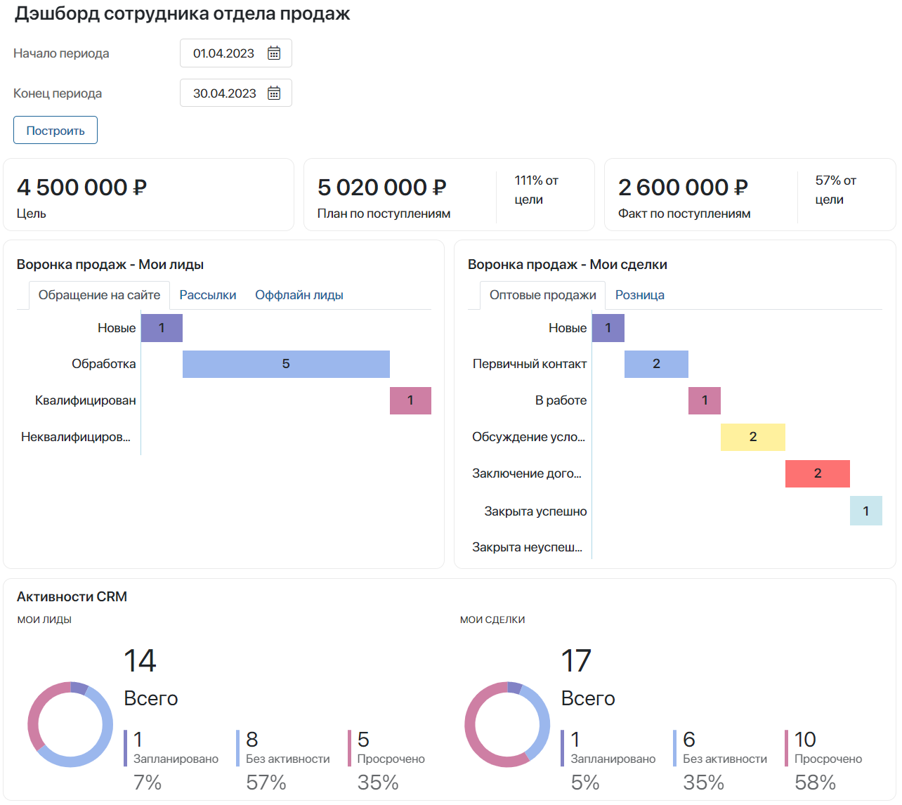

Раздел CRM позволяет наладить процессы взаимодействия с вашими заказчиками. Здесь вы можете отслеживать работу с лидами и сделками, закреплять за ними ответственных, назначать и контролировать активности менеджеров по продажам. Кроме того, в этом разделе собрана вся информация о контрагентах, контактах, сделках и поступлениях.
Обратите внимание, если у вас нет лицензии одного из платных решений CRM, вы увидите в разделе приложения Компании и Контакты и сможете работать только с ними.
начало внимание
Приложения Лиды, Сделки, Отчеты и Справочники доступны при активации одного из платных решений CRM, в которые входят эти компоненты. С ними смогут работать только пользователи, у которых есть лицензия решения.
конец внимание
Лиды
В приложении Лиды собрана вся информация о ваших потенциальных клиентах. С его помощью вы можете структурировать работу отдела продаж, разделив поступившие заявки и реальные сделки.
Лиды отображаются в виде канбан-доски и группируются по этапам работы с ними. Вы можете легко отслеживать движение лида по воронке. В карточке показывается менеджер, ответственный за работу с лидом, поставленные задачи, а также продукт, в покупке которого заинтересован клиент.
Если клиент проявляет высокую заинтересованность в продукте, вы можете квалифицировать лид в сделку.
Подробнее о работе с лидами читайте в статьях:
- «Лиды»;
- «Создание и удаление лида»;
- «Воронки лидов»;
- «Отображение лидов»;
- «Карточка лида»;
- «Работа со статусами. Квалификация лида»;
- «Нераспределённые лиды»;
- «Все лиды»;
- «Задачи CRM»;
- «Поиск и фильтры в разделе „CRM“»;
- «Настройка доступа к приложениям CRM».
Сделки
Когда потенциальный клиент готов к покупке, вы можете добавить новую сделку и работать с ней в одноименном приложении.
Сделки, как и лиды, отображены на странице воронки в виде канбан-доски. Каждая колонка соответствует статусу сделки. Это могут быть, например, Новые, Первичный контакт, В работе, Обсуждение условий и т. д. Такое наглядное отображение позволяет отслеживать этапы работы с клиентом в воронке продаж.
Ключевую информацию по каждой сделке можно посмотреть на её карточке. Нажав на название сделки, вы увидите имя ответственного менеджера, данные о покупателе и заказе, этап или статус, хронологию работы, задачи и примечания менеджера и т. д.
Подробнее о том, как работать со сделками, читайте в статьях:
- «Сделки»;
- «Создание и удаление сделок»;
- «Карточка сделки»;
- «Изменение статуса и закрытие сделки»;
- «Отображение сделок»;
- «Нераспределённые сделки»;
- «Все сделки»;
- «Воронки сделок»;
- «Перенести сделку в другую воронку»;
- «Задачи CRM»;
- «Поиск и фильтры в разделе „CRM“»;
- «Настройка доступа к приложениям CRM».
Компании
В этом приложении хранится ваша клиентская база. В карточке компании отображаются контактные данные, информация о её сегменте и отрасли, список поставленных задач, связанные лиды и сделки, которые заключались с организацией.
Внешний вид карточки легко настроить, чтобы она максимально отвечала вашим потребностям. Например, можно добавить пользовательские поля или отобразить иерархическую структуру организации, если в вашу клиентскую базу добавлены её филиалы.
Подробнее о работе с этим приложением читайте в статьях:
- «Компании»;
- «Настройки приложения „Компании“»;
- «Задачи CRM»;
- «Поиск и фильтры в разделе „CRM“»;
- «Настройка доступа к приложениям CRM».
Контакты
Контакты — это сотрудники компаний-клиентов, с которыми вы взаимодействуете в процессе работы над лидом или сделкой. Вы можете привязать контакт к конкретному лиду, сделке или компании. В карточке контакта содержится информация о должности, рабочем телефоне, почте сотрудника.
История взаимодействия с контактом фиксируется в системе и отображается в его карточке. Это позволяет вам отслеживать все последние касания с клиентом в одном месте. Кроме того, на основе этих данных определяется готовность клиента к покупке, то есть его стадия прогрева.
Подробнее читайте в статьях:
- «Контакты»;
- «Создание и удаление контактов»;
- «Карточка контакта»;
- «Настройки приложения „Контакты“»;
- «Настройки истории активностей»;
- «Отслеживание истории активностей»;
- «Задачи CRM»;
- «Поиск и фильтры в разделе „CRM“»;
- «Настройка доступа к приложениям CRM».
Справочники
В Справочниках хранятся данные, которые нужны для работы в разделе CRM. Для удобства вся информация структурирована в виде списков и таблиц. Данные из справочников можно добавлять на карточки Компаний и Лидов.
Преднастроенные справочники:
- Продукты — список товаров или услуг, которые предоставляет ваша компания. При создании лида вы можете сразу указывать, в покупке какого продукта заинтересован потенциальный клиент. Вместо этого справочника можно использовать раздел Продуктовый каталог, который позволяет создавать как простые, так и конфигурируемые продукты;
- Отрасли — отрасли, к которым относятся ваши контрагенты;
- Сегменты — информация о сегментах, к которым принадлежат компании-клиенты. Это может быть, например, крупный, средний или малый бизнес;
- Маркетинговые мероприятия — мероприятия, направленные на привлечение новых клиентов;
- Источники лидов — информация о том, откуда к вам обратились потенциальные клиенты.
Подробнее читайте в статье «Справочники раздела „CRM“».
Отчеты
Отчёты предоставляют аналитику по движению сделок и лидов, текущим объёмам продаж, загрузке каждого сотрудника и планируемым денежным поступлениям.
- Прогноз поступлений — отчёт предоставляет информацию об указанном бюджете сделок из выбранной воронки продаж. Сделки можно отсортировать по планируемой дате закрытия и по ответственному. Под таблицей указывается итоговая сумма прогнозируемой прибыли.
- Динамика сделок — отчёт содержит информацию о текущем состоянии сделок по выбранной воронке продаж. Он позволяет отслеживать количество сделок на каждой стадии воронки, а также отображает данные о сделках, изменивших свою стадию или завершившихся успехом/неуспехом за выбранный период времени.
- Дэшборд руководителя отдела продаж — отчёты на странице позволяют коммерческому директору и руководителям отделов анализировать эффективность работы менеджеров и групп продаж с лидами и сделками. Данные представлены в отдельных графиках и списках и отображают следующую информацию:
- Распределение Лидов / Сделок по сотрудникам — количество лидов и сделок в каждом статусе из всех созданных воронок;
- Воронка продаж – Лиды / Сделки — динамику перехода лидов и сделок в каждый из статусов воронки в процентах;
- Топ сделок — пять самых прибыльных сделок в работе;
- Поступления цель/план/факт по сотрудникам — текущее выполнение целей продаж и суммы запланированных и фактических поступлений по сотрудникам.
- Дэшборд сотрудника отдела продаж — отчёты показывают пользователям, ответственным за продажи в компании, их личные показатели по сделкам и лидам в работе, а также данные по поступлениям денежных средств и выполнению целей продаж. Информация отображается с помощью отдельных графиков и списков:
- Показатели целей продаж — соотношение поступлений по суммам цели, плана и факта и текущее выполнение целей в процентах;
- Воронка продаж – Мои лиды / Мои сделки — количество лидов и сделок в каждом статусе из всех созданных воронок;
- Активности CRM — эффективность выполнения задач CRM по всем своим лидам и сделкам;
- Топ 5 сделок — сделки с наибольшим бюджетом в работе;
- Мои задачи CRM на сегодня.

- Конверсия сделок/лидов — отчёт не добавлен в раздел по умолчанию, однако, его можно настроить и разместить на созданной пользовательской странице. График показывает процентное соотношение количества лидов или сделок, которым присваивался каждый из статусов в воронке. Такой отчёт будет полезен отделу продаж. Например, по нему можно сравнить количество всех добавленных сделок и закрытых с успехом/неуспехом.